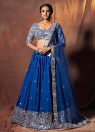

. Mukaish Lehenga Choli
Lehenga Choli is the traditional dress of women in Uttar Pradesh. It consists of a long, colourful, flowy skirt with beautiful embellishments. On the other hand, the Choli is a small blouse designed with different vibrant threads. It is adorned with a small piece of fabric known as a dupatta, which is wrapped around the neck.The traditional dress of men and women in Uttar Pradesh resembles the rest of the Indian States. But their dressing style’s beauty, simplicity and elegance make it a beautiful artwork. Today, some traditional dresses are becoming extinct due to modernization, but we can see people flaunting their traditional attire during classical folk dances.